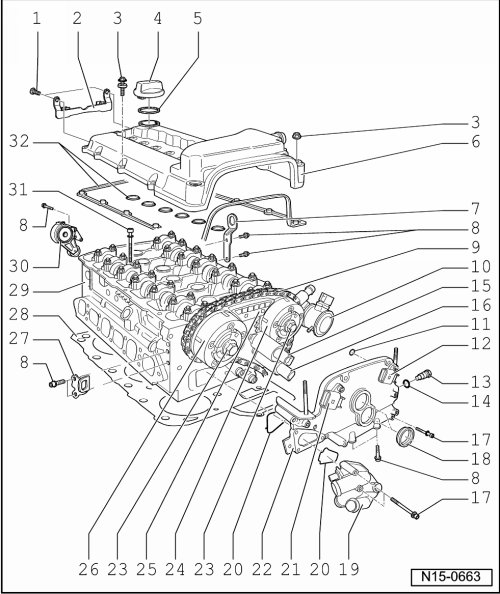

Cylinder Head, Assembly Overview
Cylinder Head, Assembly Overview
• To remove the cylinder head the engine must first be removed --> [ Engine Removing ] Engine Removing.
• If a replacement cylinder head is installed, all contact surfaces between support elements, roller cam followers and cam lubricating surfaces of camshafts must be oiled before installing the cylinder head cover.
• The plastic protectors installed to protect the open valves must only be removed immediately before fitting the cylinder head.
• When replacing the cylinder head or cylinder gasket, the complete amount of coolant must be replaced.

1 10 Nm
2 Bracket
• For wiring harness
3 10 Nm
• With spacer sleeve and seal
• Replace seal if damaged
4 Sealing cap
• Replace gaskets if damaged
5 Seal
6 Cylinder head cover
• Removing and installing --> [ Cylinder Head Cover ] Cylinder Head Cover.
• Replace if damaged
7 Lifting eye
8 23 Nm
9 Camshaft roller chain
• Mark direction of rotation before removing (installation position) --> [ Roller Chain, Marking ] Camshaft Timing Chains, Assembly Overview
• Installing --> [ Intermediate Driveshaft and Camshaft Drive Timing Chains, Installing ] Intermediate Driveshaft and Camshaft Drive Timing Chains, Installing.
10 Combination valve
• Removing and installing --> [ Secondary Air Injection System, Assembly Overview ] Secondary Air Injection System, Assembly Overview.
• Checking --> [ Secondary Air Injection System Combination Valve, Checking ] Secondary Air Injection System Combination Valve, Checking.
11 O-ring
• For oil channel seal
• Replace
• Oil before assembling
12 Camshaft position (CMP) sensor 2 (G163)
• For exhaust camshaft
• Before disconnecting, mark allocation of connector to component
13 Chain tensioner, 40 Nm
• For camshaft roller chain --> [ (Item 9) Camshaft roller chain ]
• Only rotate engine with chain tensioner installed
14 Seal
• Replace if damaged or leaking
15 Camshaft adjustment valve 1 (N205)
• For intake camshaft
• Removing and installing --> [ Camshaft Adjuster Valves ] Camshaft Adjuster Valves.
• Before disconnecting, mark allocation of connector to component
16 Camshaft adjustment valve 1 (exhaust) (N318)
• For exhaust camshaft
• Removing and installing --> [ Camshaft Adjuster Valves ] Camshaft Adjuster Valves.
• Before disconnecting, mark allocation of connector to component
17 8 Nm
18 Seal
• For camshaft adjustment valve 1 (N205), --> [ (Item 15) ] and Camshaft adjustment valve 1 (exhaust) (N318), --> [ (Item 16) ]
• Replace if damaged or leaking
19 Coolant thermostat housing
• Disassembling and assembling --> [ Thermostat Housing, Assembly Overview ] Thermostat Housing, Assembly Overview.
• Coolant hose connection diagram --> [ Coolant Hose Connection Diagram ] [1][2]Cooling System.
20 Seal
• Replace
21 Camshaft Position (CMP) sensor (G40)
• For intake camshaft
• Before disconnecting, mark allocation of connector to component
22 Cover
• If only the cover has been removed, prepare cylinder head gasket for installation --> [ Cylinder Head Gasket, Preparing for Assembly ] Cylinder Head Cover, Assembly Overview
• With O-ring for oil channel seal --> [ (Item 11) O-ring ]
23 60 Nm + 1/4 turn (90°)
• Replace
• Contact surface of sender wheel must be dry around bolt head when assembling
• To remove and install, counter-hold with 32 mm open end wrench on camshaft --> [ Camshafts ] Camshafts.
24 Exhaust camshaft adjuster
• Identification: 32A
• Only rotate engine with camshaft adjuster installed
• Installing --> [ Intermediate Driveshaft and Camshaft Drive Timing Chains, Installing ] Intermediate Driveshaft and Camshaft Drive Timing Chains, Installing.
25 Guide rail
• For camshaft roller chain --> [ (Item 9) Camshaft roller chain ]
• Clipped in at control housing
26 Intake camshaft adjuster
• Identification: 24E
• Only rotate engine with camshaft adjuster installed
• Installing --> [ Intermediate Driveshaft and Camshaft Drive Timing Chains, Installing ] Intermediate Driveshaft and Camshaft Drive Timing Chains, Installing.
27 Lifting eye
28 Cylinder head gasket
• Metal gasket
• Replace
• Prepare cylinder head gasket for installation --> [ Cylinder Head Gasket, Preparing for Assembly ] Cylinder Head Cover, Assembly Overview
• After replacing replace entire amount of coolant
29 Cylinder head
• Check for distortion --> [ Checking Cylinder Head for Distortion ] Cylinder Head
• Removing and installing --> [ Cylinder Head ] Cylinder Head.
• After replacing replace entire amount of coolant
30 Tensioning element
• For ribbed belt
• Removing and installing ribbed belt --> [ Ribbed Belt ] Ribbed Belt.
31 Cylinder head bolt
• Replace
• Observe installation instructions and sequence for loosening and tightening --> [ Cylinder Head ] Cylinder Head.
32 Gasket, cylinder head cover
• Replace if damaged or leaking
• Note installation position